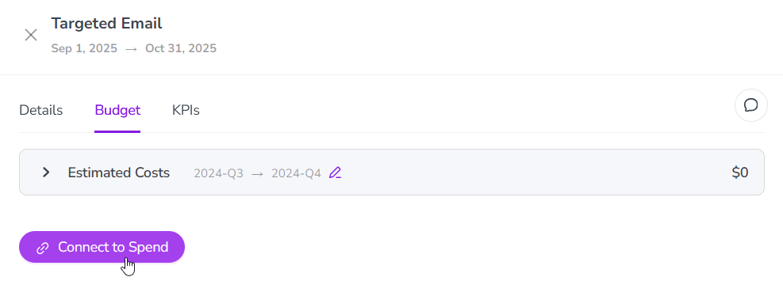
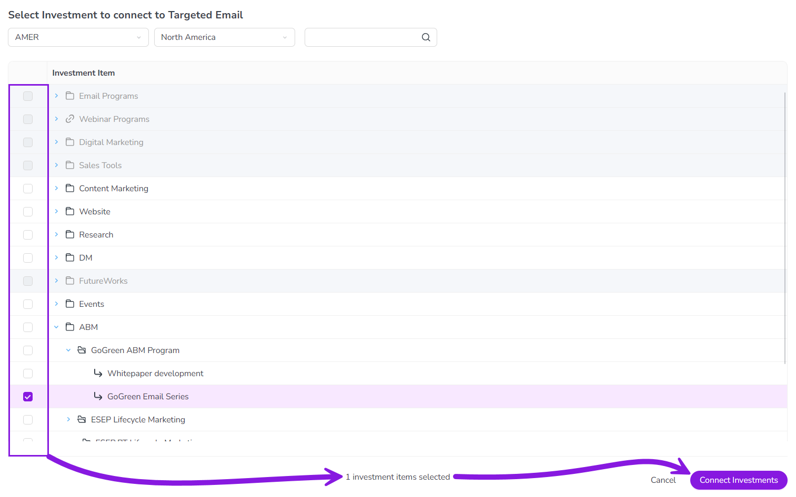
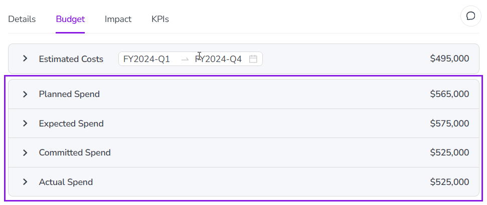

Connect investments to track activity funding
To represent how the activities in your marketing plan are funded, you can connect investments in Uptempo Financial Management to the marketing activities they are intended to fund.
You can:
Connect activities at any level of the activity hierarchy to investments (but your administrator may restrict connections to only certain activity types).
Connect activities to one or multiple investments, at any level of the investment hierarchy (category, sub-category, or line item).
To prevent connections between activities and investments that would cause conflicts or are otherwise not valid, the system automatically enforces a set of rules for making connections. To learn more about these rules, see Rules for connecting investments.
Connect an activity to an investment
In the
 Activities section, find the activity you want to connect to an investment in the activity hierarchy panel. Click on the activity's name to open its details panel.
Activities section, find the activity you want to connect to an investment in the activity hierarchy panel. Click on the activity's name to open its details panel.Click on the Budget tab section in the details panel.
Click
 Connect to Spend.
Connect to Spend. 
In the Select Investment to connect to... dialog, use the Select Budget menus to choose the budget you want to use. The Investment Item list is displayed that shows available investments in the selected budget.
In the Investment Item list, use the checkboxes to select an investment you want to connect. If needed, you can select multiple investments.
Click Connect Investments to connect the selected investments to the activity:

The Select Investment to connect to... dialog closes, and you are returned to the Budget tab section of the activity's details panel.
{kind=link}
The selected investments are now connected to the activity, and you can view and track investment data for the activity. For details, see Track and analyze activity budgets.
Disconnect an investment from an activity
If you want to make changes to how your activities are funded, you can disconnect investments from activities.
In the
Activities section, find the activity you want to connect to an investment in the activity hierarchy panel. Click on the activity's name to open its details panel.Click on the Budget tab section in the details panel.
Click on any of the spend data sections to expand it and view the connected investments.

In the expanded spend data section, click
 Disconnect on the investment you want to disconnect.
Disconnect on the investment you want to disconnect.Review the information in the confirmation dialog to ensure you understand what will happen when you disconnect the investment. To finish the disconnection, click Disconnect Activity.
The investment is disconnected with immediate effect, and is no longer listed on the Budget tab section of the activity's details panel.